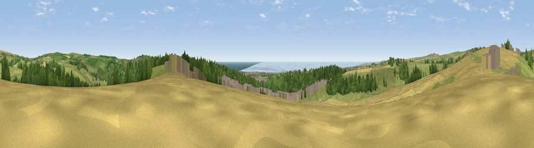

Viewpoint near Patcham
#7230 in England · top 27% of its area beats it · near Patcham · access?Where it is
The exact computed spot (TQ 27975 08475). Click the marker for map links.
Public access: no public right of way or access land is recorded at this exact spot — it may be on private land. Computed from Natural England's CRoW access layer and OpenStreetMap rights of way — not the legal definitive map. Always verify locally.
The view, rendered

A 360° render of this exact spot computed from the terrain model, tree cover and land cover — summer colours, afternoon light, calibrated against photographs of famous viewpoints. Real trees, hedges and buildings will differ in detail.
The panorama
Grey silhouette: terrain skyline in each direction (720 bearings, Earth curvature and refraction included). Dashed green: skyline with trees (+15 m) and buildings (+8 m) as obstacles. Blue strip: how far the ground is visible on each bearing.
Where the view opens
Wedge length = distance to the farthest visible ground on that bearing (vegetation-aware). Rings at 10, 25 and 50 km.
What fills the view
40% grassland · 22% woodland · 21% cropland · 9% water · 8% built-up
Angular shares of the visible panorama (visual magnitude), not map area. Landscape diversity 0.63 (0–1 Shannon).
Key numbers
More beautiful places nearby
The staircase of upgrades: each row has a higher view potential than everything closer. Driving times are estimates from straight-line distance, calibrated against real road routing — check an actual route before setting out.
| Place | Direction | Drive | Score |
|---|---|---|---|
| Viewpoint near Patcham | NNW · 1 km | ~2 min | 71.5 |
| Devil's Dyke | NW · 3 km | ~8 min | 81.2 |
| Fulking Hill | NW · 4 km | ~9 min | 82.2 |
| Viewpoint near Steyning | WNW · 13 km | ~24 min | 82.6 |
| Chanctonbury Ring | WNW · 14 km | ~26 min | 87.0 |
| Firle Beacon | E · 21 km | ~35 min | 88.9 |
| Viewpoint near Niton | WSW · 85 km | ~109 min | 89.2 |
| Viewpoint near West Bexington | W · 174 km | ~195 min | 89.5 |
50.86163, -0.18297 · source: screening · position refined by local search. Computed location — check access rights before visiting.